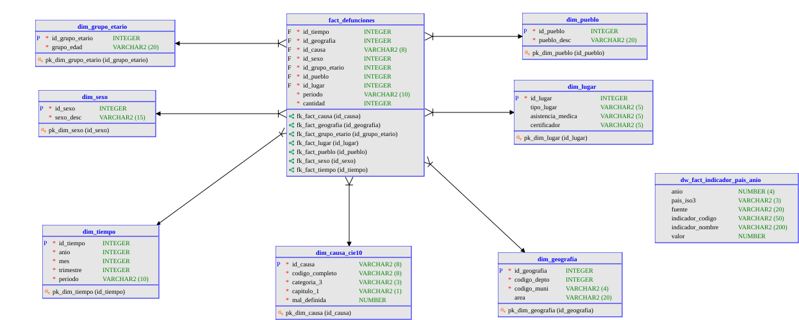

Modelo Dimensional — Data Warehouse Estrella¶
Introducción¶
El Data Warehouse implementa un esquema estrella (Kimball) optimizado para análisis multidimensional de mortalidad. El modelo transforma la tabla conformada stage.defunciones (919,231 registros) en una estructura dimensional que soporta consultas pre/post-COVID eficientemente.
Arquitectura:
- 1 tabla de hechos: fact_defunciones
- 7 tablas de dimensión: tiempo, geografía, causa, sexo, grupo etario, pueblo, lugar
- Grano: una defunción
- Medida principal: cantidad (=1, en escala atómica)
Diagrama Entidad-Relación: Modelo Estrella¶

1. Decisiones de diseño¶
1.1 Grano del hecho¶
Nivel de granularidad: Una fila = una defunción individual
Justificación: - Preserva máxima flexibilidad analítica (agregación desde el átomo) - Permite medidas aditivas: suma de cantidad = total de defunciones - Habilita jerarquías en dimensiones (por ej: mes → trimestre → año)
Alternativa rechazada: Hecho preaagregado por departamento/mes sería más compacto pero eliminaría capacidad de análisis ad-hoc (ej: por municipio, por etnia, etc.).
1.2 Medida principal¶
Medida: cantidad (siempre = 1)
Valores aditivos: SUM por cualquier combinación de dimensiones
Ventajas: - Simple: evita errores de conversión de unidades - Coherente con OLAP (cúbos de análisis) - Reproducible: cantidad = COUNT(*)
1.3 Identificadores de llave¶
Estrategia: Llaves naturales derivadas del negocio, no artificiales
id_tiempo: AAAAMM (concatenación de año-mes)id_geografia: depto(2dígitos) + municipio(4dígitos) = 6 dígitosid_causa: código CIE-10 completo (ej: "U071", "R992")id_sexo: código INE (1, 2, 9)id_grupo_etario: código OPS (0–6, 9)id_pueblo: código INE (1–5, 9)id_lugar: concatenación de sitio + asistencia + certificador
Ventaja: Las llaves contienen significado (no son opacos números secuenciales), facilitando debugging y auditoría.
2. Tabla de hechos: fact_defunciones¶
Estructura¶
CREATE TABLE fact_defunciones (
id_tiempo INT, -- FK: AAAAMM
id_geografia INT, -- FK: depto+muni
id_causa VARCHAR(8), -- FK: CIE-10
id_sexo INT, -- FK: 1,2,9
id_grupo_etario INT, -- FK: 0..6,9
id_pueblo INT, -- FK: 1..5,9
id_lugar INT, -- FK: sitio+asist+cert
periodo VARCHAR(10), -- Degenerate: PRE_COVID/POST_COVID
cantidad INT -- Medida (=1)
);
Campos¶
| Campo | Tipo | Rol | Descripción |
|---|---|---|---|
id_tiempo |
INT | FK | Concatenación AAAAMM para índices eficientes |
id_geografia |
INT | FK | Depto(2) + municipio(4), ej: 010101 (Guat., Guatemala) |
id_causa |
VARCHAR(8) | FK | Código CIE-10 sin punto; conserva jerarquía en dim |
id_sexo |
INT | FK | 1=Hombre, 2=Mujer, 9=Ignorado |
id_grupo_etario |
INT | FK | OPS: 0=<1año, 1=1-4años, ..., 6=≥65años, 9=Ign. |
id_pueblo |
INT | FK | 1=Indígena, 2=Ladino, 3=Xinca, 4=Garifuna, 5=Otro, 9=Ign. |
id_lugar |
INT | FK | Composite: sitio + asistencia + certificador |
periodo |
VARCHAR(10) | Degenerate | PRE_COVID (≤2019) o POST_COVID (≥2020) |
cantidad |
INT | Medida | Siempre 1 (entidades agregables) |
Cardinalidad de fact¶
Registros esperados: 919,231 (equivalente a filas en stage.defunciones)
Índices recomendados: - Clave primaria compuesta: (id_tiempo, id_geografia, id_causa, id_sexo, id_grupo_etario, id_pueblo, id_lugar) - O: índice en (id_tiempo, id_causa) para análisis frecuentes
3. Dimensión: dim_tiempo¶
Propósito¶
Responder preguntas temporales: ¿defunciones por mes? ¿comparar 2015 vs 2023? ¿tendencias por trimestre?
Estructura¶
CREATE TABLE dim_tiempo (
id_tiempo INT, -- PK: AAAAMM
anio INT,
mes INT, -- 1..12
trimestre INT, -- 1..4, derivado
periodo VARCHAR(10) -- PRE_COVID o POST_COVID
);
Ejemplos de datos¶
| id_tiempo | anio | mes | trimestre | periodo |
|---|---|---|---|---|
| 201501 | 2015 | 1 | 1 | PRE_COVID |
| 201512 | 2015 | 12 | 4 | PRE_COVID |
| 202001 | 2020 | 1 | 1 | POST_COVID |
| 202412 | 2024 | 12 | 4 | POST_COVID |
Jerarquía temporal¶
Cardinalidad¶
12 meses × 10 años = 120 registros (máximo)
4. Dimensión: dim_geografia¶
Propósito¶
Análisis por ubicación geográfica: ¿defunciones por departamento? ¿municipio? ¿urbano vs rural?
Estructura¶
CREATE TABLE dim_geografia (
id_geografia INT, -- PK: depto(2) + muni(4)
codigo_depto INT, -- 1..22
codigo_muni VARCHAR(4), -- 0101..2201 (lpad)
area VARCHAR(20) -- urbano/rural (solo 2015-2017)
);
Ejemplos¶
| id_geografia | codigo_depto | codigo_muni | area |
|---|---|---|---|
| 10101 | 1 | 0101 | urbano |
| 10102 | 1 | 0102 | urbano |
| 101031 | 1 | 0103 | rural |
| 222201 | 22 | 2201 | NULL |
Cardinalidad¶
~334 municipios × 2 clasificaciones área = ~668 registros
Limitación: area es NULL para 2018–2024 (disponible solo 2015–2017).
Jerarquía geográfica¶
5. Dimensión: dim_causa_cie10¶
Propósito¶
Análisis por causa de defunción: ¿mortalidad por capítulo CIE? ¿por categoría específica? ¿COVID-19 vs otras causas?
Estructura¶
CREATE TABLE dim_causa_cie10 (
id_causa VARCHAR(8), -- PK: código completo
codigo_completo VARCHAR(8), -- Redundante para claridad
categoria_3 VARCHAR(3), -- Categoría (3 chars)
capitulo_1 VARCHAR(1), -- Capítulo (1 char)
mal_definida BOOLEAN -- Flag: capítulo R
);
Ejemplos¶
| id_causa | codigo_completo | categoria_3 | capitulo_1 | mal_definida |
|---|---|---|---|---|
| U071 | U071 | U07 | U | FALSE |
| I219 | I219 | I21 | I | FALSE |
| R992 | R992 | R99 | R | TRUE |
| E149 | E149 | E14 | E | FALSE |
Jerarquía CIE-10¶
Ejemplo: Capítulo U (COVID-19) → U07 (COVID-19) → U071 (COVID-19, confirmado por laboratorio).
Cardinalidad¶
~2,600 códigos únicos en período de estudio
Caveat: Mal definida (Capítulo R)¶
Aproximadamente 13.5% de defunciones tienen causa mal definida (capítulo R: síntomas, signos, hallazgos anormales). El flag mal_definida=TRUE permite:
- Análisis de calidad de datos
- Filtrado opcional (causa raíz = excluir mal definidas)
6. Dimensión: dim_sexo¶
Propósito¶
Análisis por género: ¿diferencias en mortalidad por sexo? ¿por causa y sexo?
Estructura¶
Datos¶
| id_sexo | sexo_desc |
|---|---|
| 1 | Hombre |
| 2 | Mujer |
| 9 | Ignorado |
Cardinalidad¶
3 registros (categoría pequeña)
7. Dimensión: dim_grupo_etario¶
Propósito¶
Análisis por edad: ¿mortalidad infantil? ¿personas adultas mayores? ¿pirámide etaria?
Estructura¶
CREATE TABLE dim_grupo_etario (
id_grupo_etario INT, -- PK: 0..6, 9
grupo_edad VARCHAR(20) -- Descripción OPS
);
Grupos etarios (estándar OPS)¶
| id | grupo_edad | Rango |
|---|---|---|
| 0 | Menor de 1 año | <1 |
| 1 | 1 a 4 años | 1-4 |
| 2 | 5 a 9 años | 5-9 |
| 3 | 10 a 19 años | 10-19 |
| 4 | 20 a 49 años | 20-49 |
| 5 | 50 a 64 años | 50-64 |
| 6 | 65 años y más | ≥65 |
| 9 | No especificado | Ignorado |
Cardinalidad¶
8 registros
Nota técnica¶
El grupo "Menor de 1 año" incluye:
- Registros con Perdif=1 (edad en días)
- Registros con Perdif=2 (edad en meses)
- Registros con edad_anios=0
Esta consolidación corrige el Hallazgo H4 del EDA (edades en unidades mixtas).
8. Dimensión: dim_pueblo¶
Propósito¶
Análisis por pueblo/etnia: ¿mortalidad diferenciada por grupos étnicos? ¿disparidades étnicas en causas?
Estructura¶
Pueblos (clasificación INE Guatemala)¶
| id | pueblo_desc |
|---|---|
| 1 | Indígena |
| 2 | Ladino |
| 3 | Xinca |
| 4 | Garifuna |
| 5 | Otro |
| 9 | Ignorado |
Cardinalidad¶
6 registros
Caveat: Cobertura (Hallazgo H7)¶
- 16–19% de registros tienen pueblo=Ignorado (convertido a NULL en Stage)
- Análisis por pueblo con garantía de n ≥ 5 (para privacidad k-anonimato)
- Grupos minoritarios (Xinca, Garifuna) pueden tener baja representación
Implicación ética: Disparidades en mortalidad observadas por pueblo pueden reflejar tanto realidad epidemiológica como sesgo en recolección de datos.
9. Dimensión: dim_lugar¶
Propósito¶
Análisis por contexto de ocurrencia: ¿defunciones en hospital vs hogar? ¿con asistencia médica? ¿quién certificó?
Estructura¶
CREATE TABLE dim_lugar (
id_lugar INT, -- PK: composite
tipo_lugar VARCHAR(5), -- Sitio de ocurrencia
asistencia_medica VARCHAR(5), -- Recibió asistencia
certificador VARCHAR(5) -- Quién certificó
);
Componentes¶
Sitio de ocurrencia (Ocur):
- 1: Hospital / Clínica
- 2: Domicilio
- 3: Vía pública
- 4: Otro lugar
- 9: Ignorado
Asistencia médica (Asist):
- 1: Sí, médico
- 2: Sí, paramédico
- 3: No
- 9: Ignorado
Certificador (Cerdef):
- 1: Médico
- 2: Paramédico
- 3: Autoridad civil
- 9: Ignorado
Ejemplo de id_lugar¶
ID construido como concatenación: Ocur (1 dígito) + Asist (1 dígito) + Cerdef (1 dígito)
Ej: 111 = Hospital + Asistencia médica + Médico certificador
Cardinalidad¶
5 × 4 × 4 = 80 combinaciones posibles (muchas pueden estar vacías)
10. Análisis multidimensional: Ejemplos de consultas¶
Ejemplo 1: Mortalidad por año pre/post-COVID¶
SELECT
t.anio,
t.periodo,
SUM(f.cantidad) AS total_defunciones
FROM fact_defunciones f
JOIN dim_tiempo t ON f.id_tiempo = t.id_tiempo
GROUP BY t.anio, t.periodo
ORDER BY t.anio;
Ejemplo 2: Top 10 causas de muerte, comparativa pre/post¶
SELECT
c.codigo_completo,
c.capitulo_1,
t.periodo,
SUM(f.cantidad) AS muertes
FROM fact_defunciones f
JOIN dim_causa_cie10 c ON f.id_causa = c.id_causa
JOIN dim_tiempo t ON f.id_tiempo = t.id_tiempo
WHERE c.mal_definida = FALSE -- Excluir causas mal definidas
GROUP BY c.codigo_completo, c.capitulo_1, t.periodo
ORDER BY t.periodo, muertes DESC
LIMIT 10;
Ejemplo 3: Mortalidad por pueblo, controlando por edad¶
SELECT
p.pueblo_desc,
e.grupo_edad,
SUM(f.cantidad) AS defunciones
FROM fact_defunciones f
JOIN dim_pueblo p ON f.id_pueblo = p.id_pueblo
JOIN dim_grupo_etario e ON f.id_grupo_etario = e.id_grupo_etario
WHERE f.id_pueblo <> 9 -- Excluir ignorado
GROUP BY p.pueblo_desc, e.grupo_edad
HAVING SUM(f.cantidad) >= 5 -- Caveat: n >= 5
ORDER BY p.pueblo_desc, e.id_grupo_etario;
11. Justificación del modelo para análisis pre/post-COVID¶
El modelo dimensional responde las preguntas estratégicas del cliente (MSPAS):
| Pregunta | Dimensiones | Filtro |
|---|---|---|
| ¿Cómo cambió mortalidad por departamento? | Geografía, Tiempo | periodo IN (PRE_COVID, POST_COVID) |
| ¿Qué causas aumentaron post-COVID? | Causa, Tiempo | periodo y causa != mal_definida |
| ¿Diferencias por género? | Sexo, Tiempo | todas las combinaciones |
| ¿Impacto en menores de edad? | Grupo etario, Tiempo, Causa | grupo_etario = 0 ó 1 |
| ¿Disparidades étnicas? | Pueblo, Causa, Tiempo | pueblo <> 9 con n >= 5 |
12. Particionamiento y optimización¶
Particionamiento físico (recomendado)¶
Particionar fact_defunciones por id_tiempo (año/mes):
- Mejora scan de rangos temporales frecuentes
- Facilita mantenimiento y purga histórica
Índices¶
CREATE INDEX idx_fact_tiempo ON fact_defunciones(id_tiempo);
CREATE INDEX idx_fact_causa ON fact_defunciones(id_causa);
CREATE INDEX idx_fact_geografia ON fact_defunciones(id_geografia);
CREATE INDEX idx_fact_sexo ON fact_defunciones(id_sexo);
Estadísticas¶
Actualizar estadísticas regularmente post-insert para optimizador de consultas.
11. Extensión: Constelación de hechos — dw_fact_indicador_pais_anio¶
El notebook constelacion.ipynb extiende el DW a un modelo de constelación de hechos (galaxy schema) añadiendo una segunda tabla de hechos independiente para benchmarking regional con indicadores de la OMS y el Banco Mundial.
Estructura¶
CREATE TABLE dw_fact_indicador_pais_anio (
anio NUMBER(4,0),
pais_iso3 VARCHAR2(3),
fuente VARCHAR2(20),
indicador_codigo VARCHAR2(50),
indicador_nombre VARCHAR2(200),
valor NUMBER
);
Campos¶
| Campo | Tipo | Descripción |
|---|---|---|
anio |
NUMBER(4,0) | Año del indicador |
pais_iso3 |
VARCHAR2(3) | Código ISO 3166-1 alfa-3 del país (ej. GTM, CRI, HND) |
fuente |
VARCHAR2(20) | Origen del dato: WHO_OMS o WORLDBANK |
indicador_codigo |
VARCHAR2(50) | Código del indicador (ej. WHOSIS_000001 para OMS; SP.DYN.CDRT.IN para World Bank) |
indicador_nombre |
VARCHAR2(200) | Descripción del indicador (disponible solo para World Bank; NULL para OMS) |
valor |
NUMBER | Valor numérico del indicador |
Grano¶
Un indicador específico (indicador_codigo) para un país (pais_iso3) en un año (anio). El grano es indicador × país × año.
Cardinalidad¶
| Fuente | Filas |
|---|---|
| WHO_OMS | 1,708 |
| WORLDBANK | 450 |
| Total | 2,158 |
Relación con el modelo estrella¶
dw_fact_indicador_pais_anio no tiene FK hacia fact_defunciones ni hacia las dimensiones del esquema estrella. Es un hecho satélite independiente. La conexión analítica con las defunciones de Guatemala se realiza en la capa de consulta filtrando por pais_iso3 = 'GTM' y haciendo JOIN sobre anio.
Tablas de Stage que la alimentan¶
| Tabla Stage | Filas | Fuente Bronze |
|---|---|---|
stage.oms_indicadores |
1,708 | bronze.json_oms |
stage.worldbank_indicadores |
450 | bronze.json_worldbank |
Conclusión¶
El modelo presentado combina un esquema estrella (fact_defunciones + 7 dimensiones) con una constelación de hechos (fact_indicador_pais_anio) que habilita benchmarking regional:
- Habilita análisis multidimensional sin necesidad de preaagregación
- Preserva flexibilidad: nuevas preguntas sin rediseño
- Documenta decisiones: cada dimensión tiene justificación en EDA
- Soporta anonimización: diseñado compatible con k-anonimato
- Responde al encargo: análisis pre/post-COVID con desagregación geográfica, étnica, por edad y causa
- Benchmarking regional: indicadores OMS/World Bank para Centroamérica disponibles en fact_indicador_pais_anio
Está listo para entrega en Databricks (nube) y PostgreSQL (réplica local).